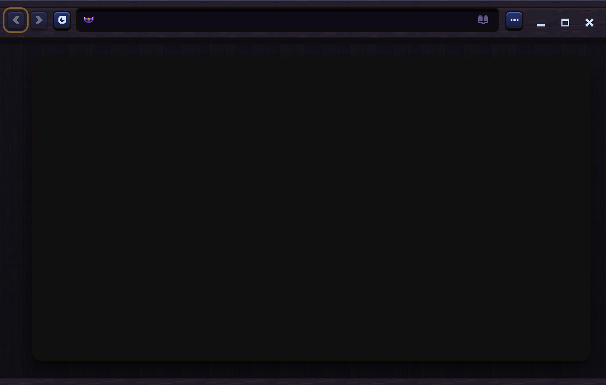
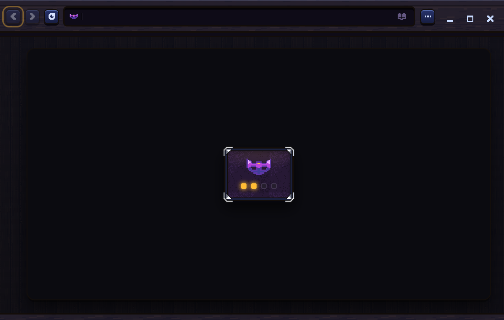
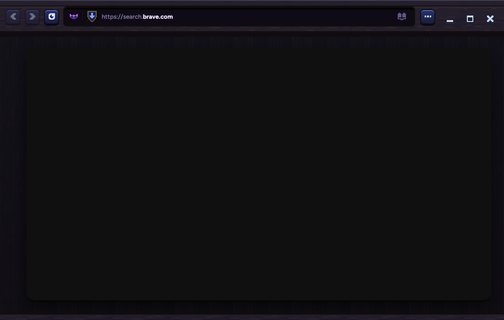
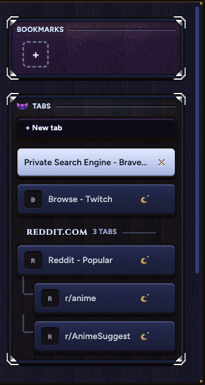
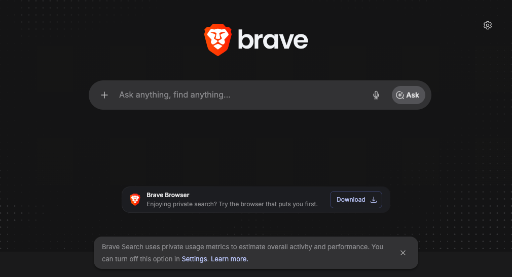
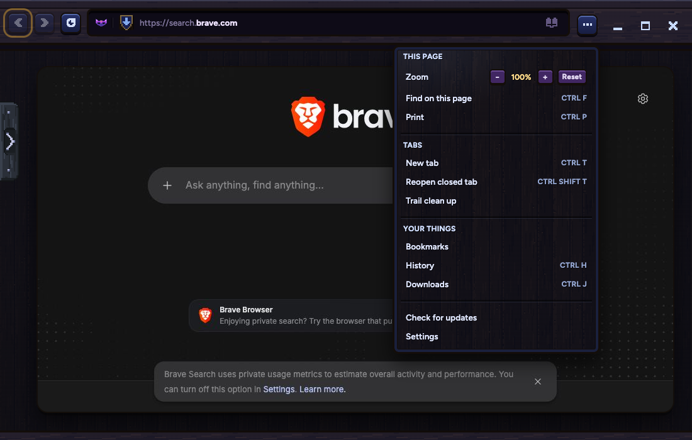

A second browser inside Samara, all its own: bookmarks, tabs, history and logins. The mask is the key: one click for your PIN, one click to hide it all, a double click for a new PIN. Normal Samara shows no sign of it.




Click the mask and enter your PIN to pick up right where you were: every video paused, nothing playing.

Your Mac password first, in the Mac's own box. Esc or a click outside stops it at any step. Everything you kept stays.
Your Mac password.
NEW PIN
4 to 8 numbers. A light grows as you type; Enter when done.
AGAIN
The same again. A mismatch shakes and starts the new one over.
No brown left, and no lines that don't belong here.
